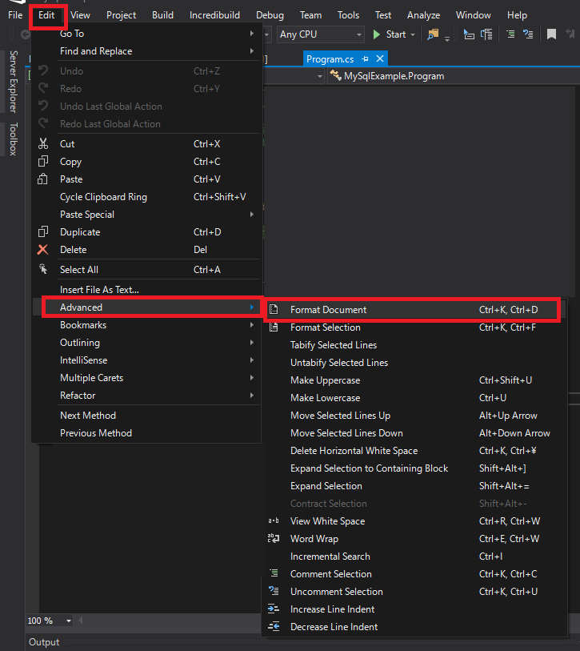

こんにちは。明月です。
この投稿はC#のコーティング規約に関する説明です。
まず、コーティング規約に関して簡単に説明すると、コーティング規約は我々がプログラムを作成する時に守らなければならないルールと言います。プログラムの性能と効率性とは関係がないし、複数の人とプログラムを作成する時にソースを見やすくするために決めたルールです。
簡単に例で話すと、関数命名法をみると「動詞 + 名詞」の型で普通は「GetData」名で作成します。でも「DataGet」という関数名を作成してもプログラムが動かないということではありません。いや、「abcdefghijklm」という関数名にしてもプログラムが動くことでは何も問題がありません。
でも「GetData」という関数名を作成すると関数のソースを見なくてもこの関数は「どのデータを取得する関数だ」だと予想することができますが、変な関数名で作成すると関数名だけでどの動作するかを分かりません。
それでMSにはC#をコーディングする時に、関数命名法、ソース内でスペース規則などのルールを設定して使うことでお勧めしています。これをコーディング規約と言います。
link - MSのコーティング標準
命名ルール
正規化されたクラスの名前に一行目に長く表示されないようにしましょう。つまり、含めているすべてのnamespaceを設定する必要がありません。< p="">
// 間違い命名方法 System.Diagnostics.PerformanceCounterCategory category = new System.Diagnostics.PerformanceCounterCategory(); // 指示文はvarを使って最大に簡潔して使うし宣言文のネームスペースはusingを使って一行目のコーディング表記を短くしましょう。 using System.Diagnostics; var category = new PerformanceCounterCategory();
レイアウトルール
良いレイアウトルールは、コードの構文を強調して読みやすく作成することです。
1. 基本コード編集ツールの設定 (4文字インデント、スペースで保存されたタブ)を使いましょう。
ショットキーはCtrl + K + Dです。

2. 一行目には一つのステップだけ作成しましょう。
// 間違いコード方法 if( a > 0) for(int i = 0; i < 10; i++) Console.WriteLine(i); // 正しいコード方法 if (a > 0) { for (int i = 0; i < 10; i++) { Console.WriteLine(i); } }
3. 連続的にチェインパターンの関数宣言する時、自動にインデントができないなら、タブ間隔をインデントしましょう。(4スペース)
-> 特にLinq式の場合は.Where .Selectの連続された処理式が可能ですが、ラインを変わる時には必ずインデントをして区分を決めましょう。
List.Where(x => x.IsCheck) .Select의(x => x.Data);
4. メソッドの定義とプロパティの正義の間には少なくても一つの空白を追加しましょう。
-> これが何の話かをすごく悩みました。
たぶん、メソッドの名とパラメータ間に空白を入れてくださいという意味みたいです。
public void SetData (int a) { }
5. 括弧を使って表現式で節を明確にしましょう。
-> ifやforの場合に格好なしでコーディング(一行目コーディング)が可能ですが、お勧めではありません。できれば括弧を入れて確実に区分する方が良いでしょう。
コメントルール
1. コードの行の末尾にコメントを入れずに、別の行にコメントを作成しましょう。
// 間違い表記方法 if ( a == 0 ) // aが0の場合 { } // 正しい表記方法 // aが0の場合 if ( a == 0 ) { }2. 大文字でコメントテキストを開始します。(英語だけの事項です。)
3. ピリオドがある説明テキストを終了します。(英語だけの事項です。)
4. コメント区分記号(//)とコメントテキスト間に一つの空白を入れましょう。
//間違い表記方法 // 正しい表記方法
言語ルール
1. 文字列データタイプ
1-1. 出来ればstring interpolation(補間式)を使いましょう。
int data = 10; Console.WriteLine($"Hello world {data}");link - [C#] Stringの補間式(interpolation)
1-2. 多い変数のStringオブジェクトを合併する場合にはStringBuilderを使いましょう。
var phrase = "lalalalalalalalalalalalalalalalalalalalalalalalalalalalalala"; var manyPhrases = new StringBuilder(); for (var i = 0; i < 10000; i++) { manyPhrases.Append(phrase); }
2. 暗視的な変数型のタイプ
2-1. 変数タイプが正確にあるか別の区分が必要ない場合はvarタイプを使いましょう。
link - [C#] 27. varキーワードとdynamicキーワード
2-2. タイプが明確ではない場合、dynamicタイプとobjectタイプの場合はvarを使いません。
2-3. 変数名には変数の型(データタイプ)を暗視する命名はしません。
// 間違い場合 var inputInt = 10;2-4. forとforeachでは必ずvarタイプを使いましょう。
for (var i=0 ; i<100 ; i++) { } foreach (var data in List) { }
3. Unsigned Data Type
一般的にUnsigned Typeは使いません。例にintタイプで十分に可能な値をunsigned intを使う必要はありません。
4. 配列
最大に簡潔に作成しましょう。
string[] vowels1 = { "a", "e", "i", "o", "u" }; var vowels2 = new string[] { "a", "e", "i", "o", "u" };
5. デリゲート
最大に簡潔に作成するし、クラスに依存しないように作成します。(クラスの依存関係は仕様により差異がある。)
using System; namespace Example { // デリゲートはclassの外部でも作成可能 public delegate void Del(string message); class Program { // デリゲートの例関数 public static void DelMethod(string str) { Console.WriteLine("DelMethod argument: {0}", str); } // 実行関数 static void Main(string[] args) { Del exampleDel2 = DelMethod; Del exampleDel1 = new Del(DelMethod); } } }
6. 例外処理
6.1 例外処理はtry~catchを使いましょう。(別の例外処理もあるの???)
6.2 Disposeメソッドの呼び出しコードはusingを使いましょう。
Font font1 = new Font("Arial", 10.0f); try { byte charset = font1.GdiCharSet; } finally { if (font1 != null) { ((IDisposable)font1).Dispose(); } } // try - finally文をusingキーワードに可能 using (Font font2 = new Font("Arial", 10.0f)) { byte charset = font2.GdiCharSet; }
7. &&と||演算子
性能と可読性のためにできれば&と|代わりに&&と||を使いましょう。
(|と||は使い方が違うではない？bit演算の場合は|が合ってるが、多分true、falseを区分するためにできれば||を使いましょうと意味みたい。いや、使い方が全然違うじゃない。。。。)
// 間違い表記方法 if(a == 1 & b == 1) { } // 正しい表記方法 if(a == 1 && b == 1) { }
8. イベント
後で取り除く必要がないevent handlerの場合はラムダ式をお勧めします。
(確かにラムダ式が便利ですが、ラムダ式だけ作成すると可読性が悪くなりますが。。。)
// 間違い方法 public Form1() { this.Click += new EventHandler(Form1_Click); } void Form1_Click(object sender, EventArgs e) { MessageBox.Show(((MouseEventArgs)e).Location.ToString()); } // 正しい方法 public Form2() { this.Click += (s, e) => { MessageBox.Show(((MouseEventArgs)e).Location.ToString()); }; }
9. 静的メンバー
必ずクラス名を付けましょう。
public class Test { public static int Data; public void Print() { // 間違い表記方法 Data = 0; // 正しい表記方法 Test.Data = 1; } }
10. Linq式
10-1. 変数名を結果値(リターン値)の予測値で命名しましょう。
10-2. select結果に匿名クラスを使う場合、属性の始めの文字ど大文字にしましょう。(プロパティ命名法)
10-3. 結果の変数の値があいまいな場合に明確にしましょう。
10-4. 結果の変数タイプはvarを使いましょう。
10-5. インデントはfromに合わせましょう。
-> Linq式の方法は上の説明した内容を繰り返してするらしいです。その程に重要って意味ですね。
その以外のコードルール
以前に私がコードルールを勉強した時とは今のコードルールは全然違いますね。私が覚えているコードルールを追加します。
1. クラスのメンバー変数は必ずprivateで作成しましょう。
2. メンバー変数の始めの文字は小文字で名詞だけ構成します。
3. プロパティの始め文字は大文字です。
4. 関数は「動詞 + 名詞」の型で始め文字と節区分は必ず大文字です。例、GetData, CreateBuildExcelSheet...
参考でJavaの場合は「動詞 + 名詞」の型は同じですが、始め文字は小文字、節区分は大文字です。別のルールなので参考してください。 例) getData, createBuildExcelSheet..
6. 括弧の前は必ず改行です。
参考にJavaの場合は括弧の前に開業を入れないルールです。
// C#の場合は if( a == 1) { } // Javaの場合は if ( a == 1) { }7. クラスはできればデコレーションパターンで作成しましょう。(interfaceから抽象クラスを継承して、クラスを継承します。)
8. クラス名とファイル名は一致して作成します。
9. ネームスペース名とフォルダ名は一致して作成します。
10. goto文は使いません。
11. if - else文よりif break, continueあるいはif return文を使いましょう。
// 間違い使い方 for(var i=0; i<100; i++) { if(i%2 == 0) { Console.WriteLine("偶数です。"); } else { Console.WriteLine("奇数です。"); } } // 正しい使い方 for(var i=0; i<100; i++) { if(i%2 == 0) { Console.WriteLine("偶数です。"); continue; } Console.WriteLine("奇数です。"); }12. できれば一行目で一つの処理だけ作成しましょう。
String data = ""; // 間違い使い方 Console.WriteLine((String.IsNullOrEmpty(data) ? "null" : data)?.Length); // 正しい使い方 String buffer; int length = 0; if (String.IsNullOrEmpty(data)) { buffer = "null"; } else { buffer = data; } Console.WriteLine(buffer.Length);
その以外の命名ルールの場合は私が学生時代にコード標準を勉強する時の内容ですが、なぜか今はありません。なぜ無くなったかは分かりませんが、その以外の部分も実務で使っているルールなので知っているなら良いでしょう。
上のC#のコード規約はプログラムのパフォーマンスには影響が全然ありません。ある場合もありますが、普通は可読性を挙がるために存在するルールです。
そして実務ではプロジェクトを一人で進めることより、複数の人で作成する場合が多いので、お互いに不必要なコードの戦いやソース格納所(Git)にも不必要なステップができないようにしましょう。
もちろん、大きいプロジェクトや様々な会社が付けて作成する場合は別のコードルールがある場合がありますが、基本コードルールからもっと厳しくする場合が多いです。
または、社内SEや学校で作成するプロジェクトや個別のプロジェクトの場合はこのコードルールを無視して作成する場合が多いです。
それが間違いことではありませんが、ルールを合わせなければ、その程オープンAPIを使うことで制約させる可能性もありし、作成したライブラリを配布することも何か恥ずかしいですね。その後、可読性がすごく悪くなるのでコードレビューなどで誤解や問題が発生する可能性もあります。
このコードルールは些細で無視しやすい部分ですが、プロジェクトの重要度によりすごく重要な問題がなる可能性もあります。
ここまでC#のコーティング規約に関する説明でした。
ご不明なところや間違いところがあればコメントしてください。
- [C#] 61. ウィンドウフォーム(Window form)でスレッド(Thread)を使い方、クロススレッド問題解決2021/11/04 19:29:51
- [C#] 60. ウィンドウフォーム(Window form)のイベント設定する方法2021/11/02 21:18:08
- [C#] 59. ウィンドウフォーム(Window form)にコントロール(Control)を使い方法2021/10/29 19:45:43
- [C#] 58. ウィンドウフォーム(Window form)を作成する方法、そしてウィンドウメッセージとキュー2021/10/27 20:35:44
- [C#] 57. コーティング規約2021/10/21 18:57:02
- [C#] 56. 値の初期化及び基本データ値(default)を設定する方法、そして原始データのnull処理、?と??の使い方2021/10/21 18:54:41
- [C#] 55.namespaceとusing、そしてpartialの使い方2021/10/21 18:51:39
- [C#] 54. Reflection機能を使い方 - Attribute2021/10/20 19:29:31
- [C#] 53. Reflection機能を使い方 - Propertyとevent2021/10/19 21:02:58
- [C#] 52. Reflection機能を使い方 - Variable2021/10/15 19:27:37
- [C#] 51. Reflection機能を使い方 - Method2021/10/14 18:34:21
- [C#] 50. Reflection機能を使い方 - Class2021/10/13 18:34:13
- [Java] 63. Spring bootでcronスケジューラとComponentアノテーション2022/03/16 18:57:30
- [Java] 62. Spring bootでWeb-Filterを設定する方法(Spring Security)2022/03/15 22:16:37
- [Java] JWT(Json Web Token)を発行、確認する方法2022/03/14 19:12:58
- [Java] 61. Spring bootでRedisデータベースを利用してセッションクラスタリング設定する方法2022/03/01 18:20:52
- [Java] 60. Spring bootでApacheの連結とロードバランシングを設定する方法2022/02/28 18:45:48
- [Java] 59. Spring bootのJPAでEntityManagerを使い方2022/02/25 18:27:48
- [Java] 58. EclipseでSpring bootのJPAを設定する方法2022/02/23 18:11:10
- [Java] 57. EclipseでSpring bootを設定する方法2022/02/22 19:04:49
- [Python] Redisデータベースに接続して使い方2022/02/21 18:23:49
- [Java] Redisデータベースを接続して使い方(Jedisライブラリ)2022/02/16 18:13:17
- [C#] Redisのデータベースを接続して使い方2022/02/15 18:46:09
- [CentOS] Redisデータベースをインストールする方法とコマンドを使い方2022/02/14 18:33:07
- [Design pattern] 3-6. ステートパターン(State pattern)2021/11/17 20:04:47
- [Design pattern] 3-5. メメントパターン(Memento pattern)2021/11/16 20:01:36
- [Design pattern] 3-4. イテレータパターン(Iterator pattern)2021/11/15 19:31:28